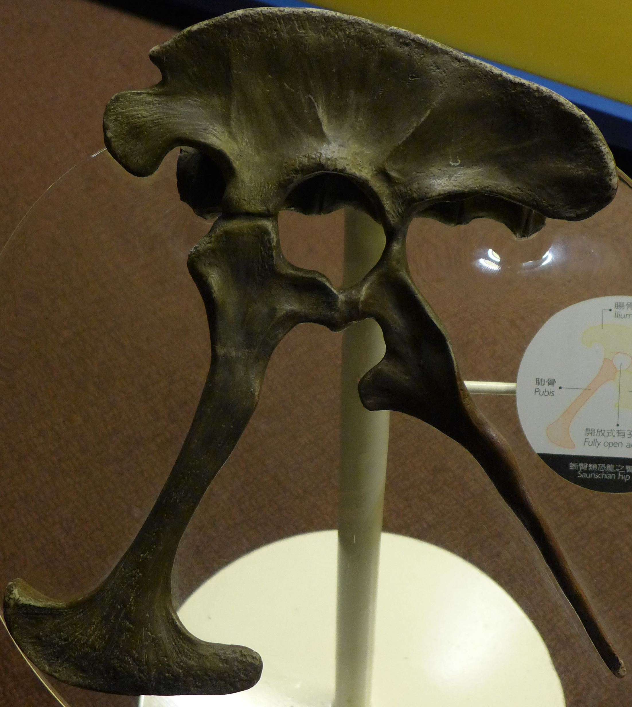
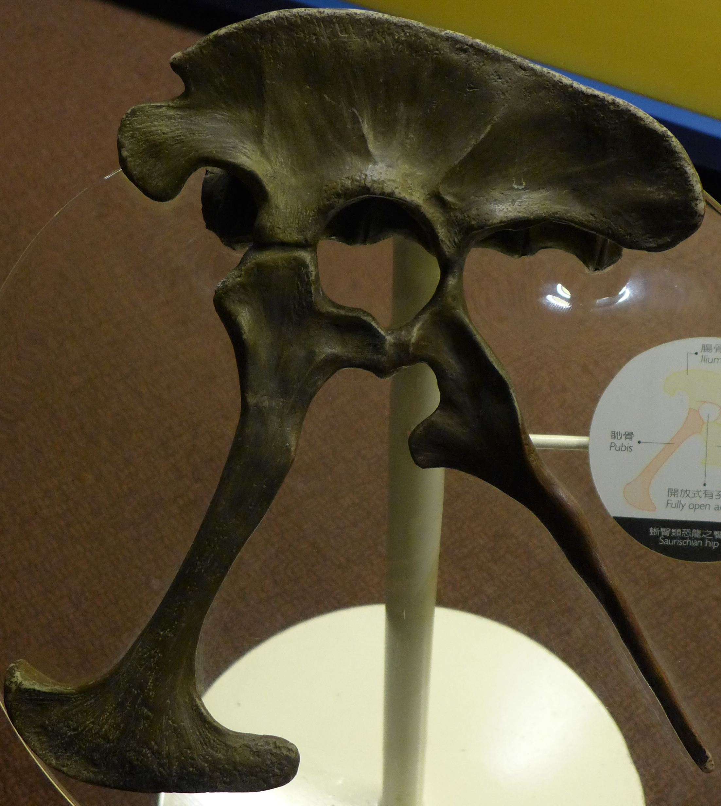
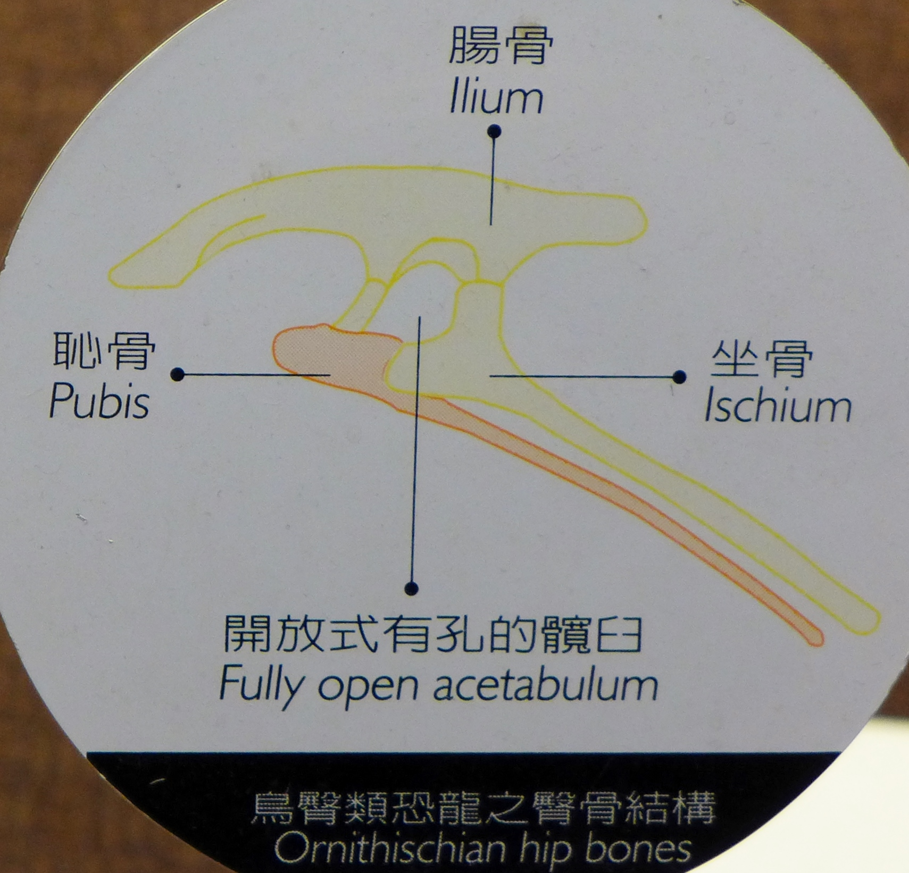
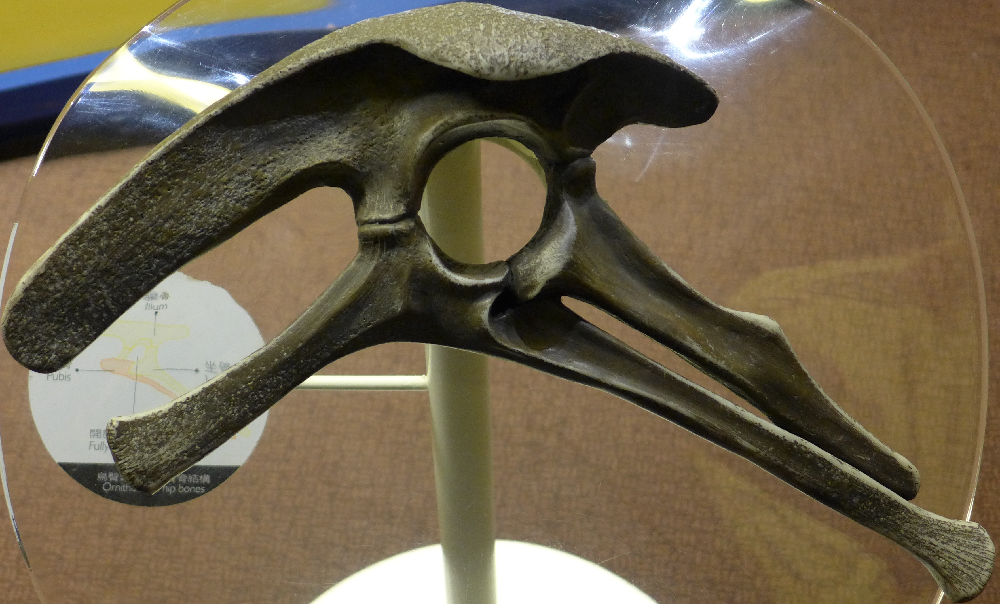

恐龍時代
 恐龍年代及分類
恐龍年代及分類
什麼是恐龍?
恐龍是脊椎動物家族的成員之一，屬於雙弓爬行羊膜類中的祖龍類。 牠最主要的演化特徵均與行動有關，這包括了骨盤內部結構(髖骨上開放式有孔的凹孔)， 和大腳骨與骨盤的連接方式等(股骨頭端成球狀，可以朝內間入髖骨)， 使得牠們四肢直立，而不像其他爬行動物的爬行姿態。 牠們早在2億3000萬年前就在地球上出現，直到6千5百萬年前的滅絕， 牠們在地球生活了1億6000多萬年。而我們人類演化史也不過只有幾百萬年。 長久以來，我們常以為恐龍的滅絕是因為牠們行動緩慢和適應力差。 但近幾年來的研究發現，其實恐龍是相當敏捷，和具有發育相當好的腦。 因此科學家認為恐龍的滅絕，應與運氣不好有關， 遇到地球發生大規模災難性的變化所導致的。 恐龍還有一些活到現在的親戚，其中鱷是與恐龍同屬祖龍類的遠親， 而鳥類更有可能是恐龍的後代。
恐龍的多樣性
恐龍大約出現在距今2億3000萬年前的三疊紀晚期， 當時整個陸塊還是連接在一起，隨著白堊紀時期陸塊的漂移， 恐龍的足跡更遍布全球。地理的隔離也促進了恐龍的演化， 產生了十分多樣的型態，適應各種不同的生活方式。 例如有身高可達5層樓高及重量達數十公噸的腕龍， 長長的脖子可讓牠輕易吃到樹頂的葉子；又有全身批滿盔甲的甲龍， 吃的是接近地面的植物。也有長尖牙和利爪的暴龍， 是肉食性的，最重的可達大象那麼重，不論是群體攻擊或是單獨覓食， 都是當時兇猛的掠食者。不過不是所有恐龍的體型都那麼大， 也有些恐龍的體型和一般家禽大小差不多而已。
 侏儸紀看得到暴龍嗎？
侏儸紀看得到暴龍嗎？
隨著演化，物種更趨多樣性，恐龍種類在組成上也產生稍長的情形， 例如活躍於侏儸紀的異特龍，到白堊紀時數量逐漸的減少， 而被暴龍取代其生態地位成為白堊紀的主要大型肉食性恐龍， 所以你是不會在侏儸紀時期看到暴龍的！
 

 
恐龍家族
在三疊紀晚期，恐龍的祖先逐漸演化成兩大類群的恐龍。牠們主要的差別是盤骨的排列方式。 其中一群為蜥臀類，其組成盤骨三塊骨之一的恥骨是朝著前方，這與其他爬行動物的盤骨十分的相似。 另一類是鳥臀類，其恥骨則是朝後，並與坐骨相平行，這與鳥類的盤骨較相似。有趣的是， 鳥卻是由蜥臀類恐龍演化而來。蜥臀類演化成獸足類與蜥腳類兩大類型。 其中獸足類是二足步行的肉食性恐龍，暴龍與迅掠龍都屬於這類； 而蜥腳類則多為大型四足步行的植食性恐龍，這類的代表有腕龍、圓頂龍等。 而鳥臀類也演化成各種植食性恐龍，包括了侏羅紀時期的劍龍及白堊紀的三角龍等。